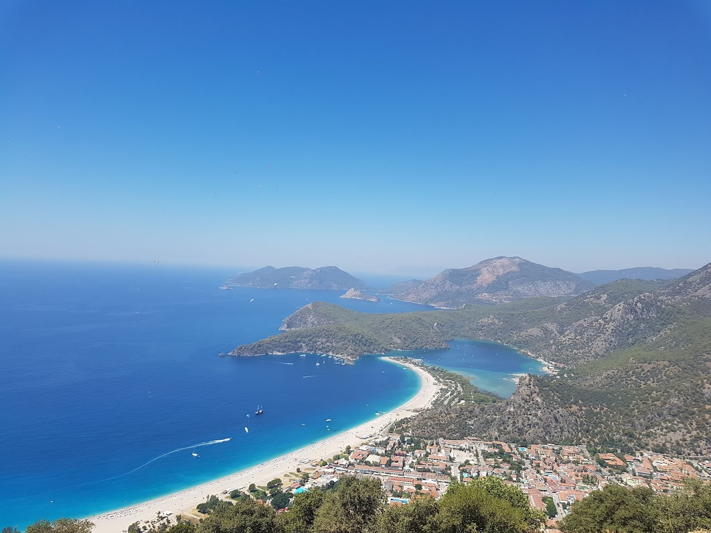

Дмитренко Марина Василівна
Народилася в Чернігівській обл. 23 квітня 1987 року
Навчалася в школі смт. Холми
Хоббі:
- Кататися на велосипеді
- Займатися дизайном
- Збирати гриби
Улюблені фільми:
- Планета Земля - 1/2
- Не дивися вверх
- Матриця
місто Олюденіз
Олюденіз (тур. Ölüdeniz, дослівно Мертве море) – курорт на південному заході Туреччини, де знаходиться найвідоміший пляж турецького Середземномор’я. Розташований між Анталією і Бодрумом недалеко від містечка Фетхіє. Олюденіз — це невелике курортне селище на Середземному морі, яке приваблює мільйони туристів надзвичайно красивим пляжем Блакитна лагуна.
Блакитна лагуна, напевно, найкрасивіший пляж в Туреччині, якою славиться мальовничою природою і приголомшливо чистою бірюзовою водою. Цікаво, що навіть за сильного шторму море тут тихе і чисте.
